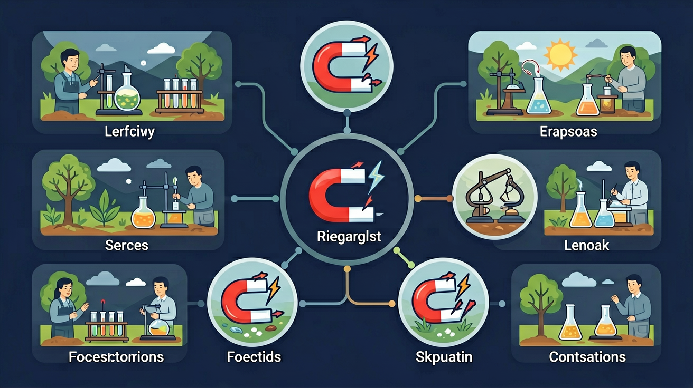

探索磁铁的神奇力量：为什么磁铁能吸铁？N极S极有什么秘密？指南针怎么工作？

🎯 能说出磁铁的两极及其相互作用规律
🎯 能判断常见材料是否具有磁性
🎯 能分析磁铁周围磁场的分布特点
❓ 为什么磁铁能吸铁却不能吸塑料？
❓ 指南针为什么总是指向南北？
❓ 如果把磁铁切成两半，会得到两块小磁铁吗？
学完这一课，这些问题你都能自信地回答。
哪种材料能被磁铁吸引？
两块磁铁的N极靠近时会怎样？
磁铁是生活中常见的物品。我们知道磁铁能"吸"住某些东西，冰箱上的贴纸就是用磁铁固定的，工厂里用大磁铁搬运废铁。每个人都见过磁铁。
但是——为什么磁铁能吸铁钉，却不能吸铜钱？为什么两块磁铁有时会互相吸引，有时又互相推开？把磁铁掰成两半，新断口会变成什么极？磁铁藏着多少我们不知道的秘密？
因此，今天我们要探索磁铁的三大秘密：①什么能被磁铁吸引；②N极S极的相互作用；③磁场与磁力线是什么。学完后，你将能解释身边所有磁铁现象！
北极（North Pole）
磁铁红色端，朝向地球北方
指南针红针就是N极
南极（South Pole）
磁铁蓝色端，朝向地球南方
与N极总是成对出现
磁铁周围存在一种特殊的空间，能对铁磁体产生作用力。这个空间叫磁场，虽然看不见摸不着，但确实存在。
磁力线从N极出发，在外部弯弧流向S极，在内部从S极返回N极，形成闭合曲线。越密集的地方磁场越强。
把铁粉撒在纸上，将磁铁放在纸下，铁粉会沿磁力线排列，让我们直接"看见"磁场的形状！
只有铁（Fe）、镍（Ni）、钴（Co）这三种金属能被磁铁吸引，统称"铁磁性材料"。铜、铝、金、银等金属不能被磁铁吸引。
指南针的磁针是一块条形磁铁。地球本身有强大的地磁场，地磁北极（靠近地理北极附近）会吸引指南针的N极，使其始终指向北方。
地球的地磁场是由地核中熔融铁合金的流动产生的。地磁极与地理极相近但不完全重合，磁偏角在不同地方略有差异。
冰箱门上有一圈软磁铁，能吸住金属门框，防止冷气外泄，节约能源。
电流通过线圈产生磁场，与永久磁铁配合驱动纸盆振动，发出声音。
利用同极相斥，使列车悬浮在轨道上，消除摩擦力，可高速行驶。
工厂用大型电磁铁从垃圾中分离出铁制品，高效实现废铁回收利用。
银行卡背面的黑色磁条中，铁磁微粒的排列方向记录着账户信息。
医院的MRI机器使用超强磁场对人体进行成像，帮助医生诊断疾病。